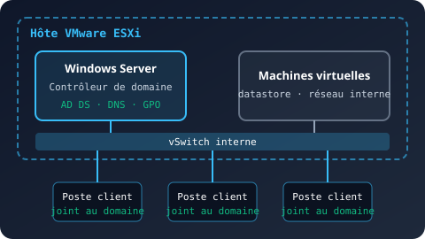
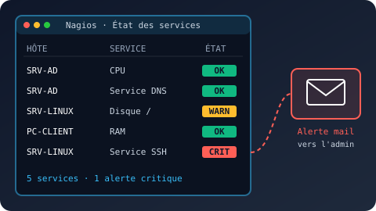

Présentation de l'épreuve E6
L'épreuve E6, « Administration des systèmes et des réseaux », évalue les compétences du bloc 2 de l'option SISR : conception, déploiement, administration et sécurisation d'une infrastructure réseau.
Elle s'appuie sur deux situations professionnelles, présentées par une fiche descriptive et une documentation technique. Les deux projets portent sur la même PME : le premier met en place l'infrastructure, le second la supervise.
Mes deux projets
Déploiement d'une infrastructure Active Directory virtualisée sous VMware ESXi

Contexte
Une PME n'a aucune gestion centralisée de ses utilisateurs et de ses postes. Objectif : déployer un domaine Active Directory sur un hyperviseur VMware ESXi pour centraliser l'authentification, le DNS et les règles de sécurité.
Architecture
- Hôte VMware ESXi et vSwitch dédié au réseau interne
- Contrôleur de domaine Windows Server (AD DS et DNS)
- Postes clients Windows joints au domaine
Réalisations
- Création des machines virtuelles sous ESXi
- Installation de Windows Server et promotion en contrôleur de domaine
- Configuration des zones DNS
- Création des unités d'organisation, groupes et utilisateurs
- Stratégies de groupe (GPO) : mots de passe, restrictions, lecteurs réseau
Tests
- Jonction des postes au domaine et ouverture de session
- Résolution DNS et application des GPO (
gpresult)
Mise en place d'une solution de supervision Nagios avec alertes et tableaux de bord

Contexte
La même PME n'a aucun outil de supervision : les pannes sont découvertes par les utilisateurs. Objectif : déployer une surveillance centralisée pour détecter les incidents avant qu'ils ne gênent l'activité.
Architecture
- Serveur Nagios virtualisé sous ESXi
- Contrôleur de domaine Windows Server
- Client Windows et serveur Linux supervisés
Fonctionnalités
- Supervision CPU, RAM et disque des hôtes
- Surveillance des services Windows et Linux
- Seuils d'avertissement et critiques personnalisés
- Notifications par mail
- Tableaux de bord et carte du réseau
Tests
- Arrêt d'un service, surcharge CPU et saturation disque
- Vérification de la remontée des alertes et des mails